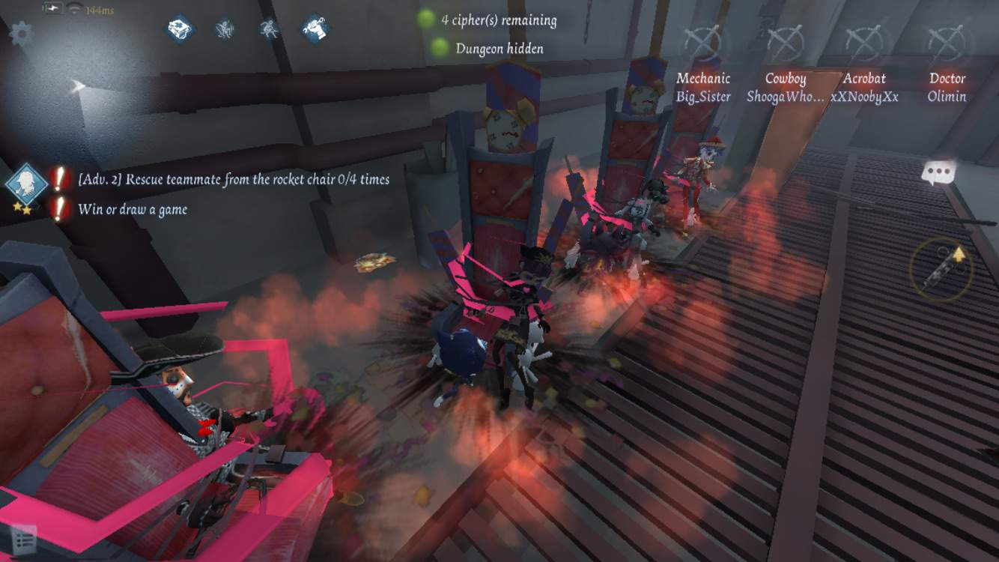

also known as:
Sure, it sucks when someone is chaired in basement. It's a really advantageous position for the hunter to be in- you have to run allll the way down to the survivor, they can drop hit you with no recovery. Some hunters are REALLLY good at downing you in record time. But having someone in the basement, especially early game puts the devil in my teammates. They turn off their brains. Rush in.
And at that point, we might as well throw a salsa party for the hunter in the basement. Get a pinata in there. Lay down a little blanket, even, so that they are at maximum comfort as our rocket chairs slowly burrow into the ground.
pictured: a fun team wipe